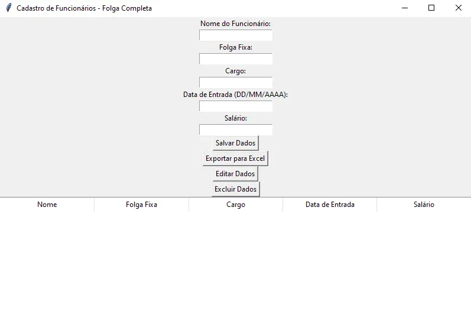
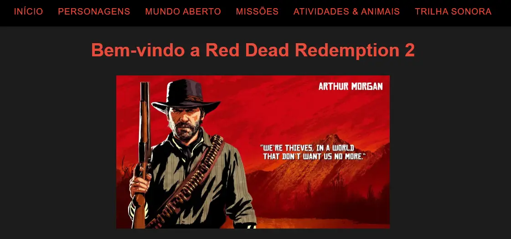

Tecnologias


Desenvolvedor Full Stack
Desenvolvedor Fullstack com experiência em HTML, CSS, JavaScript e Python para automações, e ampliando conhecimentos em Java estudando com muita consistência. Crio soluções eficientes e escaláveis, aplicando boas práticas de desenvolvimento e utilizando frameworks como Bootstrap e Tailwind. Estou sempre aprimorando minhas habilidades para entregar aplicações de alta qualidade.

Desktop para otimizar cadastro e gestão de escalas de trabalho de funcionários, com Python, Tkinter e Pandas.
Código Fonte
Projeto de website responsivo, com tema do jogo Red Dead Redemption 2, utilizando HTML, CSS e JavaScript, hospedado no Vercel.